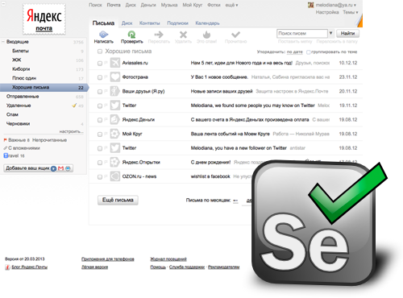

Использование Selenium WebDriver для автоматического тестирования веб-интерфейса Яндекс.Почты
Node.JS, Тестирование IT-систем, Tutorial
Без качественного тестирования невозможно разрабатывать и поддерживать крупный веб-сервис. На ранних этапах его развития часто можно обходиться только ручным тестированием по заданному тест-плану, но с появлением новых фич и увеличением количества тест-кейсов довольствоваться только им становится все сложнее и сложнее. В этой статье мы расскажем о том, как автоматизируем функциональное тестирование веб-интерфейса Яндекс.Почты с помощью Selenium WebDriver и Node.js.

Помимо Selenium WebDriver существует ещё несколько решений для автоматического тестирования веб-интерфейсов, среди которых Watir, Zombie.js, PhantomJS. Но именно он стал практически стандартом. Во-первых, он имеет хорошую функциональность. А во-вторых, для него есть драйверы подо все распространённые браузеры — в том числе и мобильные — и платформы, чего не скажешь о headless-инструментах (Zombie.js, PhantomJS).
А почему именно Node.js? Потому что все фронтенд-разработчики Яндекс.Почты знают JavaScript, а именно они разрабатывают интерфейс и понимают, где и что в нём меняется от релиза к релизу.
Установка и настройка
Для установки и настройки Selenium WebDriver на локальной машине понадобятся:
После установки всех зависимостей нужно:
npm install selenium-webdriver -g
java -jar selenium-server-standalone-{VERSION}.jar
Первый тест
Для примера, напишем простой тест (test.js):
var wd = require('selenium-webdriver');
var assert = require('assert');
var SELENIUM_HOST = 'http://localhost:4444/wd/hub';
var URL = 'http://www.yandex.ru';
var client = new wd.Builder()
.usingServer(SELENIUM_HOST)
.withCapabilities({ browserName: 'firefox' })
.build();
client.get(URL).then(function() {
client.findElement({ name: 'text' }).sendKeys('test');
client.findElement({ css: '.b-form-button__input' }).click();
client.getTitle().then(function(title) {
assert.ok(title.indexOf('test — Яндекс: нашлось') > -1, 'Ничего не нашлось :(');
});
client.quit();
});
По коду все довольно просто:
Получаем тайтл страницы результатов поиска и ищем в нем подстроку 'test — Яндекс: нашлось'.
Полезные ссылки:
docs.seleniumhq.org — документация по Selenium.
code.google.com/p/selenium/wiki/WebDriverJs — документация по WebDriver.js.
dvcs.w3.org/hg/webdriver/raw-file/default/webdriver-spec.html — черновик спецификации WebDriver API.